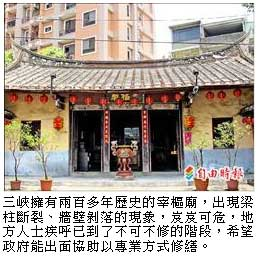
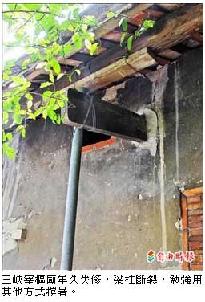
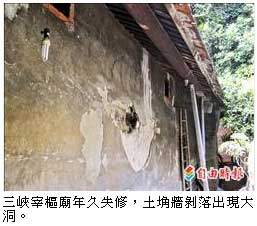

「宰樞廟」梁斷壁剝 地方人士︰不修不行了
謝佳君｜自由時報／新北都會新聞∣2013年6月25日
產權問題無法列為古蹟
新北市三峽區宰樞廟擁有兩百多年歷史，因開闢都市計畫道路近年面臨拆遷危機，加上產權問題遲遲無法列為古蹟，如今老舊家廟梁柱斷裂、牆壁剝落，岌岌可危，地方人士疾呼已不可不修，希望政府出面協助專業修繕。
公部門允提供專業建議
新北市文化局表示，宰樞廟保留了傳統文化和風俗，確有機會申請鑑定為古蹟，已和申請人取得共識，建議解決產權問題後較可行，由於宰樞廟非文化資產，若出現年久失修的情形，公部門可提供專業建議，補助經費恐有困難。
有兩百多年歷史的「家廟」
三峽區秀川里長李楷瑞說，宰樞廟創建於清乾隆四十二年（西元一七七七年），李氏家族先民來台開墾，除了供奉李氏祖先牌位，還有玄天上帝神像；但一般宗祠是將祖先牌位置中，神像擺兩側，宰樞廟卻是神像置中，祖先牌位置在左，還開放外人參拜，因此是以廟為主、祖先為輔的「家廟」，頗具宗教特色。
李楷瑞說，宰樞廟一名源於李氏曾出過宰相，希望代代都能光宗耀祖，曾辦過私塾及農會辦事處等，是極具代表性的建築，且當年李家是大地主，藝術家李梅樹曾參與家廟整修，除了有精細的神龕，還融入歐式雕刻，出現天使雕像，連門帳也是精雕細鏤的「番仔花」。
李梅樹的兒子李景光說，宰樞廟所在地早在民國五、六十年代就被劃為都市計畫道路，萬一開路，廟體恐一分為二，雖後來暫緩執行，難保未來不會拆，且宰樞廟年久失修，傳統土埆牆剝落出現大洞，梁柱也斷裂，現在勉強用千斤頂撐著，希望申請鑑定為古蹟前公部門能協助修繕，完好保存老家廟。